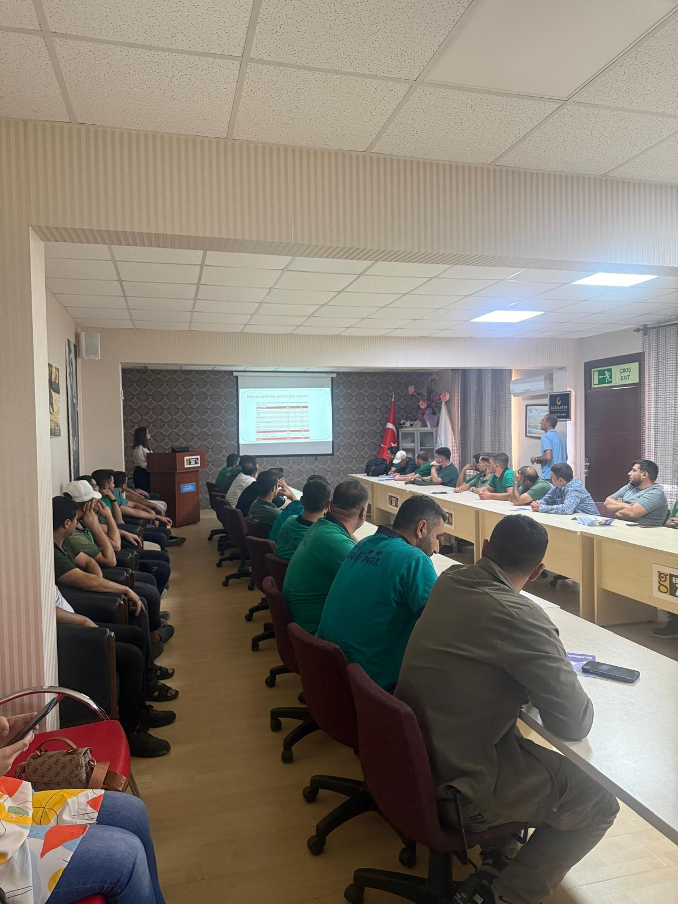

Gaziantep Hayvanat Bahçesi’nde gerçekleştirilen Kunduz Günü Semineri, doğanın çalışkan mühendisleri olarak bilinen kunduzların yaşam biçimlerini, ekosisteme katkılarını ve kültürel önemlerini ziyaretçilere aktardı. Seminerde uzman eğitmenler, kunduzların baraj ve yuva yapma davranışlarının çevre üzerindeki etkilerini örneklerle anlatarak katılımcılara ekolojik denge konusunda farkındalık kazandırdı. Çocuklar ve aileler için hazırlanan görsel sunumlar ile etkinlik daha eğlenceli hale gelirken, doğayı koruma bilincini pekiştiren bu özel gün, hem eğitici hem de keyifli bir deneyim olarak hafızalarda yerini aldı.